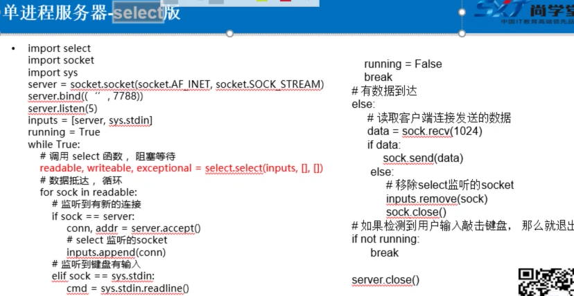

本文主要包括：闭包与装饰器，内存管理，常用的模块介绍，pdb调试，进程及线程，python网络(tcp/udp/select/poll)，数据库等
python进阶
模块与导入模块的路径设置
查看模块搜索路径
import sys
sys.path
所谓模块的搜索路径，指的是path执行import时，搜索的路径，这点有点像Windows的path环境变量，以上函数是查看现有的路径添加搜索路径
sys.path.append(‘/home/xxx文件夹’) #加在最后
sys.path.insert(‘/home/xxx文件夹’) #加在首部
这两个函数是添加新的路径重新导入模块
from imp import *
reload(模块名)
这块重新加载查看安装的模块
- 在交互解释器中使用help(“modules”)
- import sys ; sys.modules.keys()这个会把具体的包中模块也打印出来
这个主要是这个help命令，可以模块名
help(“pygame.Rect”)
dir()
如dir(sys)，其实就是列出给出对象的属性，这个些属性有对象的dir()提供
如果是module对象，只有module的属性
如果是类对象，会列出其本身的属性，以及基类的属性复习
dir能列出模块中的类、对象等属性，对于自己的代码，需要先通过sys.path.insert将模块的目录导入，然后再调用dir(模块名)来查看
循环导入
- 两个模块互相的导入
怎样避免循环导入
类似与#ifdef __DEFINE_H_H吗？
深拷贝与浅拷贝
浅拷贝这里就是拷贝了引用,深拷贝就是对一个对象所有层次的拷贝。其实与C++的深浅拷贝概念相同
就是deepcopy会递归的copy，而浅拷贝不会
import copy
copy.deepcopy
copy.copy
实例：
a = [1,2,3]
b = [4,5]
c = [a,b]
d = cimport copy
e = copy.deepcopy(c)
f = copy.copy(c)
浅拷贝对不可变类型和可变类型的copy不同（元组与列表）
a=(1,2,3)
b = copy.copy(a)
a is b #True
对于不可变类型的copy，其实就是a=b，引用指向相同的地址
【新】生成器，yield
- 初识(列表生成器)
g=(x for x in range(5))
g.next(),没有更多元素时,抛出StopIteration的异常
生成器只能用一次
for i in g:print(i) 第二种方法:yield
def fib(times):
n = 0
a,b=0,1
while n<times:yield b #yied投降,运行在这里就停一下,并且抛出后边的内容,调用一次next执行一次 a,b=b,a+b n+=1return ‘done’
g = fit(5)
#输出
next(g)
for x in g:生成器方法:next()
g = fib(5)
g.next()生成器方法:send()
g = fib(5)
g.next() / g.send(None)
g.send(“hehe”)send给生成器传递一个参数
在生成器内部:
temp = yield b #生成器抛出b,传递进的”哈哈”赋值给temp
迭代器
可迭代对象：iterator
from collection import Iterable
isinstance([],Iterable)
集合对象
生成器对象
迭代器：可以被next对象调用，并不断返回下一个对象
l = [1,2,3]
it = iter(l)
next(it) #集合本身不是迭代器
from collector imort Iterator
isinstance(it,Iterator)
闭包
定义
函数内部可以再定义内部函数,内部函数对外部函数的属性可以直接引用,则称内部函数为闭包
2个条件:嵌套函数定义,内部函数引用外部函数变量
只调用内部函数时,被引用的外部函数变量,会绑定到闭包中,一定程度上延长了生命周期
其实可以理解为,构成闭包时,外部函数的变量声明周期到了延长到了内部
实例
嵌套函数
1 | def fun1(): |
返回的是一个函数对象
闭包
1 | def outter(num): |
应用
一元一次方程:y = ax+b
1 | def line_conf(a,b): |
装饰器
定义
装饰器其实就是一个闭包,把一个函数当作参数,其中对函数进行包装,返回一个替代版新函数,其实与设计语言中了一样,也类似AOP
2个特性:
一个是把被装饰的函数替代为其他函数
而是可以在加载模块时立即执行
1 | def w1(func): |
其实就是AOP
装饰器内部函数的参与与被装饰的参数相同
不定长参数：可以将内部函数的参数设置为不定长参数，(args,**kwargs)
args表示任何多个无名参数，它是一个tuple；kwargs表示关键字参数，它是一个dict。并且同时使用*args和kwargs时，必须*args参数列要在**kwargs前
函数可以认为都有返回值，没有return时，return的是None
功能
1 | def makeBold(fn): |
通用装饰器
- 不定长参数
- 带返回值
1 | from time import ctime |
动态语言特性
定义
动态语言：在运行过程中，可以修改代码,大多数脚本语言：python,JavaScript,PHP,Ruby
静态语言：编译时已经确定好的代码，运行过程中不能修改,C,C++,Java
特性
- 为对象动态添加属性
1 | class Person(object): |
这里动态添加的属性，只是对p这个对象添加的，其他的Person类的对象是没有的
这里可以动态的添加类的动态属性，这样所有的对象都会有且一致。
- 为对象动态添加实例方法：
1 | def showInfo(self): |
- 为类动态添加类方法
1 | @classmethod |
- 为类添加静态方法
1 | @staticmethod |
限制修改对象的属性
1 | class Person(object): |
这样就会限制对象往里添加属性，只限于name与age
类装饰器
前情
函数对象 与 类
装饰器函数就是一个接口约束，它必须接受一个callable对象作为参数，然后返回一个callable对象
一般callable对象都是函数，但也有例外，只要某个类重写了call()方法那么就可以调用了
实例
1 | class Test(object): |
类装饰器
1 | class Test(object): |
内存管理
对象池
Python为了优化速度，
小整数：使用了[-5,257)对象池，避免为整数频繁申请和销毁内存。[257,无穷)都是新建对象
单个字符：也使用对象池，常驻内存
一个单词的字符串：也是在对象池中。采用引用计数共用，引用计数为0则销毁。
实例
1 | c = 'a' |
垃圾收集
简介
为新生成的对象分配内存，识别那些垃圾对象，从垃圾对象那里回收内存
python采用的是引用计数机制为主，标记-清除、隔代收集两种机制为辅的策略
python里每个东西都是对象，他们的核心是一个结构体：PyObject
1 | typedef struct_object{ |
引用计数
优点：
实时，一旦没有引用，内存就直接释放，不用其他机制的等待特定时机
缺点：
多占点内存
有可能出现循环引用：a中有b，b中有a.这是用的是隔代收集来收集
导致+1的
- 对象被创建：a=23
- 对象被引用：b=a
- 对象被传参：func(a)
- 对象作为一个元素，存在容器里:list=[a,a]
导致-1的
- 对象别名被显示销毁，del a
- 对象别名被赋予新的对象 a = 24
- 一个对象离开它的作用域，如f函数执行完毕，func函数的局部变量都会-1
- 对象所在的容器被销毁，或者从容器中删除。
查看引用计数
1 | import sys |
此时最少打印2，因为a创建+1，传参+1
垃圾回收
- 调用gc.collect()
- 当gc模块的计数器达到阀值（有3个）的时候
- 程序退出
gc模块
gc.garbage列表
gc.get_threshold()获取gc模块中自动执行垃圾回收的频率
gc._threshold(thrshold0[,th])
gc.get_count()，隔代收集中每代的个数
gc.collect([generation])隔代收集的0代表直线查第一代，1代表检查1.2代
gc模块唯一处理不了的是循环引用的类都有del方法，所以项目中避免定义del方法
gc.disable()手动关掉垃圾回收
隔代收集
内建
方法方法
- new：构造函数
- init：初始化函数
- clas：实例所在类
- str：类似与Java的toString
- repr：
- del：析构
- dict:实例地定义属性
- doc：类文档，子类不继承
- getattibute:属性访问拦截器
bases:类的所有父类构成元素
getattribute属性访问拦截器
正常使用
1 | class School(object): |
坑
1 | class Person(object): |
内建方法
- dir
dir(buildins) - range(1,10,2)
map(function, sequence[,sequence,…])根据提供的函数，对指定序列做映射
map(lambda x:x*x,[1,2,3])：结果为[1,4,9],python2直接是序列，python3是可迭代的对象
map(lamdbda x,y:x+y,[1,2,3],[4,5,6]) ：结果为[5,7,9]1
2
3
4
5
6def f1(x,y):
return (x,y)
l1 = [1,2,3]
l2 = ['a','b','c']
l3 = map(f1,l1,l2)
print(list(l3))
filter(function or None,sequence)对指定序列执行过滤操作
filter(lambda x:x%2,[1,2,3,4])
filter(None,”hello”)reduce(function,sequence[,initial])对参数序列中元素进行累积
python3中，reduce从全局名字空间中移除，放在functools模块里
from functools import reduce
reduce(lambda x,y:x+y, [1,2,3,4]) #10
reduce(lambda x,y:x+y, [1,2,3,4],5) #15
reduce(lambda x,y:x+y, [‘aa’,’bb’,’cc’],’dd’) #’ddaabbcc’
集合对象
- 支持的运算：
|:union：并集
&：intersection:交集
-:difference:差集
^:sysmmetric_difference：对称差集，x^y，在x或y中，但不会同时出现在二者之中
常用模块
functools
partial：偏函数
把一个函数的某些参数设置默认参数，返回一个新的采纳数，调用这个函数会更简单。1
2
3
4
5
6
7
8
9
10
11
12
13
14import functools
def showarg(*args,**kwagrs):
print(args)
print(kwargs)
p1=functools.partial(showarg,1,2,3)
p1() #1,2,3 #{}
p1(4,5,6) #1,2,3,4,5,6 #{}
p1(a='python', b='c++') #1,2,3 #{"a":"python","b":"c++"}
p2=functools.partial(showarg,a=3,b='linux')
p2()
p2(1,2)
p2(a="ptyon",b="c++")#这个会将默认值改掉wraps：包装函数
使用装饰器后，被装饰的函数已经是另外一个函数了，wraps的装饰器可以消除这样的副作用1
2
3
4
5
6
7
8
9
10
11
12
13
14import functools
def note(func):
@functools.wraps(func)
def wrapper():
print("note something")
return func()
return wrapper
@note
def test():
print("i am test")
test()
print(test.__doc__) 如果不加，则返回的是wrapper(), 反之为test
其实就是在新家的这个装饰器内部，修改了wrapper的doc
常用标准模块
常用三方模块
pdb调试
简介
执行时调试
python -m pdb some.py
只用这种就行
-m 指的是module， 像脚本一样运行模块交互调试
import pdb
pdb.run(‘testfun(args)’)程序下断点
import pdb
pdb.set_trace()
运行到这之后停住，使用与gdb类似，p打印，n单步，s进入函数，c继续执行，
进程
fork方法
简介
fork调用一次返回2次，父进程返回子进程id，子进程返回0
一个父进程可以fork出很多子进程，所以父进程要记下每个子进程的id，而子进程只需要调用getppid()就可以拿到父进程的id
使用
1 | import os |
多个fork
这里创建了4个进程
1 | import os |
复习
fork返回值是子进程的pid,如果本身是子进程,返回值就是0
通过Process对象创建子进程
实例
1 | from multiprocessing import Process |
Process常用方法
is_alive:判断进程是否执行
join([timeout])是否等待进程实例执行结束，或等待多少秒
start(),启动
run()，没有制定target时执行
terminat()，不管任务是否完成，终止任务，一般父进程来终止子进程
Process常用属性
name:当前进程实例别名，默认为Process-N
pid,当前进程pid
通过Prcess子类创建子进程
实例
1 | from multiprocessing import Process |
进程池
multiprocessing模块提供的Pool方法
如果池已经满了，只能等待，如果没有满，并且有空闲的，则去空闲的，反之，创建一个新进程。
实例
1 | from multiprocessing import Pool |
#创建进程池
pool = Pool(3)
for i in range(0,10):
#从进程池申请进程，传参为函数名、参数元组
#apply_async是异步申请，apply是同步。异步同时请求3个，然后同时执行；同步一个一个请求，上一个进程退出才能执行下一个
pool.apply_async(worker,(i,))
#关闭进程池，close之后再写join，进程池中的进程已经是start状态，所以不需要再start了
pool.close()
pool.join()
multiprocessing.Pool函数解析
- apply_async(func[,args[,kwagrs]]):
- apply
- close():进程池不再接受新的任务，已用的进程慢慢关闭
- terminate()：不管任务是否完成，立即终止
- join()：与Process相同
消息队列
进程之间
1 | from multiProcess import Process |
进程池
1 | from multiProcess import Pool,Manager |
感受
python的进程一部分继承了linux轻进程的特点
线程
线程简介
进程是作为资源分配的单位
调度和执行的单位
python的thread模块以及threading模块
threading模块对thread做了一些包装
实例
1 | import threading |
函数
- threading.enumerate():当前线程数量
线程创建方式
- threading.Tread的对象
- 子类化thread.Tread，实现run方法
1 | import threading,time |
传参可以通过重新定义init方法来传参
线程的几种状态
就绪，运行，阻塞状态
就绪状态到运行状态是需要系统的调用，才进入运行状态，运行状态受阻塞的事件，进入阻塞状态
运行状态下的时间片用完，进入就绪状态
线程之间通信
共享全局变量
传参方式
将全局变量作为参数传递给线程
w1 = threading.Tread(target=worker1,args=(numlist,))
这里的传参方式，直接调用函数传参需要注意的事项相同，对于可不变类型与不可变类型需要注意。对于可变参数，传递的是引用。不可变参数传递会创建新对象。
线程安全
操作分为3步骤：
cpu线程内存将g_num读到寄存器
在寄存器中+1
将寄存器写回内存
线程锁
为保证线程安全
threading模块中定义了Lock类，可以处理锁定
mutex = threading.Lock()
mutex.acquire([blocking]),返回一个bool变量
blocking默认为True，阻塞;False不阻塞
mutex.release()
死锁
这个太熟悉了,不说了
使用锁使线程顺序执行
就是每个线程一个锁.初始时,除了第一个线程的锁,其他锁都锁死,第一个线程执行完,开第二把锁,第二个执行完开第三把,依次类推.
Queue模块
python的Queue模块
- FIFO(先入先出):Queue
- LIFO(后入先出):LifoQueue
- 优先级队列:PriorityQueue
python2中from Queue import Queue
python3中from queue import Queue
使用方法与进程的相同
queue.put(对象)
queue.get()
ThreadLocal变量
ThreadLocal变量虽是全局变量，但每个线程都只读写自己线程的独立副本，互不干扰。解决了一个线程中各个函数之间相互传递的问题。
threadLocal最常用的地方就是为每个线程绑定一个数据库连接，Http请求，用户身份信息等，这样一个线程的所有调用到的处理函数，都可以非常方便的访问这些这些资源
import threading
local_school = threading.local() #这里的local说明可能不是一个类，是个函数也不对，听奇怪不遵循python3的类首字母大写的规范
就是一个线程函数中调用另一函数，这两个函数之间的数据传递。
其实是由于python的传参，对于可变类型传递的都是引用，造成了线程内部调用的函数都是线程不安全的，所以使用了这种类似与Queue的方法,将这些传参都放到全局变量里去获取。这个与queue不同的是threadLocal对各个线程是独立的，像是每个线程都有一个的样子。而且它是key-value方式存储
复习
主要是对ThreadLocal的理解，local可以看作是一个对象，它在不同线程中变量相同但数据不同。
【新】协程
介绍
比线程更小的执行单元，是在线程下的运行单元，协程一般由用户来实现，比线程占用资源更少
用处：
IO密集型程序比较适合协程，而CPU密集型不适合协程
底层：
yield来停下，然后用next来实现
greenlet使用
1 | from greenlet import greenlet |
gevent
1 | import gevent |
并发下载器
1 | from gevent import monkey |
复习
并发下载器，提示了多线程/多协程去爬取网页的技术，网页的爬取与网页的分析是可以分开来使用的，多线程可以用作很多方面。
网络简介
网络地址与主机地址
A类：1.0.0.1 - 126.255.255.254 可用的A类网络有126个每个网络容纳167 7214个主机
B类：128.1.0.1 - 191.255.255.254 B类网络有16384个，容纳主机65534个
C类：192.0.1.1 - 223.255.254 C类网络209 7152个，容纳主机254个
D类：第一个字节以1110开始，它并不指向特定的网络，目前这一类地址被用在多点广播中多点国博地址用来一次寻址一组计算机地址范围224.0.0.1 - 239.255.255.254
E类：以1111开始，为将来保留，作为实验使用私有IP 有一部分ip用于局域网使用，不再公网中使用，包括
-A类 10.0.0.0 - 10.255.255.255 -B类 172.16.0.0 - 172.31.255.255 -C类 192.168.0.0 - 192.168.255.255 - 127.0.0.1 - 127.255.255.255用户回路测试共有IP ip
路由器完成公有ip与私有ip之间的转换：所以说一台私有ip的电脑不能作为网络服务器，因为外界不能正确访问到它端口号
端口号只有整数，范围从0～65535
知名端口号，0～1023.如80:http, 21:ftp
动态端口：1024～65535
netstat -an协议
socket: cs架构与bs架构
socket-udp
使用
1 | import socket |
udp应用
语音广播，视频，QQ，TFTP,SNMP,DNS，RIP（路由信息协议，报告股票市场）
收发数据
1 | updSocket = socke(AF_INET,SOCKET_DGRAM) |
tftp
- 使用协议udp，端口69
- 使用wireshark抓包
使用tftpd32来做tftp服务器
过程：
- 客户端发请求，下载还是上传（操作类型）、文件名
- 服务器收到请求确认：如果文件没有，发出错信息；反之，发确认信息，或者直接发文件一部分
- 客户端收到文件后：如果收到文件数据，需要发确认信息，并且将数据保存本地
如果收到出错信息，终止下载 - 循环过程：服务器发文件一部分，客户端确认，知道文件发完
- 如果文件结束，应该有一个文件结束的标志
操作码：1是读即下载，2是写即上传，3是数据包，4确认，5出错
struct模块，处理C语言的结构体
pack(): pack(fmt,v1,v2…)
unpack(): unpack(fmt,string)
calcsize(fmt)，计算给点内存
fmt：!大端，windows下下小端，linux下大端，网络也是大端。大端就是高位在前
socket-tcp
服务器流程：
- 创建套接字
- bind绑定ip与port
- listen是套接字变为可以被动链接
- accept等待客户端的连接
- recv/send接收发送数据
客户端历程
- 创建socket
- connect
- send/recv
- close
多路复用
select
可以把socket当作文件读写的，用多路复用来监听

1 | import select |
select 类似与中断，同时监听多少个,是一种轮询的方式
epoll只有linux用
1 | from socket import * |
网络工具
NetAssist:网络调试助手
可以用tcp，udp协议与写的代码进行交互
wireShark:网络抓波工具
选中网卡，能抓到该网卡上的网络传输数据
tftpd32：tftp服务器
选中文件目录，提供文件上传、下载服务
Packet Tracer
- 集线器与交换机区别
集线器就是做转发，集线器网络容易出网络风暴
交换机有路由，可以做寻址等 arp
arp攻击：修改arp表，将所有的ip都指向攻击者，然后收到后进行篡改
arp就是寻址，根据ip去寻找mac地址，然后记录在本地的arp列表中路由器作用
- 连通不同的网络：
路由器相当于双网卡，一段连一个网络。一个网络中，需要设置一个网关。如果是同一网段，路由器直接发送个给对应机器，不同网段，则直接发送给网关
不同网络通信时，显示主机广播自己，然后寻址网关的的mac地址，网关返回后，主机将arp层的目的mac写为网关，ip当然还是要连接的另一网络的ip - 路由寻址
多台路由器时，需要有路由表，仿真期间，用的是静态路由表，每个arp都根据路由表传递给下一个ip，返回下一个路由的mac地址，记录在前一个路由器中，这样，在发送imcp时，路由器根据需要，改写目的mac即可。
- 连通不同的网络：
Http
http包被tcp包含。前边握手包，后边结束包
数据库
mycat
都是关系型数据库，就是在多个关系型数据库（尤其是mysql）上搭建的中间件，搭建成关系型数据库集群。
其实类似于zookeeper
python下mysql的使用
安装
pip3 install PyMySQL
Connection对象
- 建立与数据库的连接
- 创建对象，调用connect()方法
host:主机名，数据库名，用户名，密码，端口默认3306(oracle是1521)，参数charset默认’gb2312’ - 方法
close()关闭
commit()提交
rollback()回滚
cursor()游标
Cursor对象
- 执行sql语句
- 创建对象，Connection对象的cursor()方法
cursor = conn.cursor - 方法
excute(operation[,parameters])
fetchone()
next()
fetchall()
实例
import pymysql
connection = pymysql.connect(“localhost”,”root”,”sun12358”,”pythondb”)
cursor = connection.cursor()
cursor.execute(“select * from emp”)
rl = cursor.fetchall()
cursor.close()
connection.close()
其他
日期字符转换
datetime.datetime.strftime(emp[4 ], “%Y-%M-%D”)
emp[4].strftime(“%Y{y}%m{m}%d{d}”).format(y=’年’,m=’月’,d=’日’)sql注入：select * from dept where depton > 18 or 1=1
where后边的传参一定要注意
其他
基本语句
xxx, _xxx, __xxx
_xxx 不能用’from module import *’导入 （相当于protected）
__xxx__ 系统定义名字 (系统内置的，比如关键字)
__xxx 类中的私有变量名 （privated），所以更加不能使用from module import进行导入了,可以通过 _类名_xxx来访问。
上下文管理器with:
上下文管理器（Context Manager）：支持上下文管理协议的对象，这种对象实现了enter() 和 exit() 方法。上下文管理器定义执行 with 语句时要建立的运行时上下文，负责执行 with 语句块上下文中的进入与退出操作。通常使用 with 语句调用上下文管理器，也可以通过直接调用其方法来使用。
with 语句的语法格式
with context_expression [as target(s)]:
with-body
这里 context_expression 要返回一个上下文管理器对象，该对象并不赋值给 as 子句中的 target(s) ，如果指定了 as 子句的话，会将上下文管理器的 enter() 方法的返回值赋值给 target(s)。target(s) 可以是单个变量，或者由“()”括起来的元组（不能是仅仅由“,”分隔的变量列表，必须加“()”）
调试：
- 执行时调试
python -m pdb some.py
只用这种就行
-m 指的是module， 像脚本一样运行模块
- 交互调试
import pdb
pdb.run(‘testfun(args)’)
- 程序下断点
import pdb
pdb.set_trace()
运行到这之后停住，使用与gdb类似，p打印，n单步，s进入函数，c继续执行，
基本模块
re
主要2种用法：
re.find(r’\d[4-5]\s\d{1,2}’,’aetbert’ )patten = re.compile(r’\b[a-zA-Z]{3}\b’)
patten.findall(x)个数：
+*? {}
范围：
[a-z]
语法糖：
\b \w \s \d
界定符：
^ $
语言特色
C++/C内存管理
一个由C/C++编译的程序占用的内存分为以下几个部分：
1、栈区（stack）— 由编译器自动分配释放，存放函数的参数值，局部变量的值等。其操作方式类似于数据结构中的栈。
2、堆区（heap） — 一般由程序员分配释放，若程序员不释放，程序结束时可能由OS（操作系统）回收。注意它与数据结构中的堆是两回事，分配方式倒是类似于链表。
3、全局区（静态区）（static）—，全局变量和静态变量的存储是放在一块的，初始化的全局变量和静态变量在一块区域，未初始化的全局变量和未初始化的静态变量在相邻的另一块区域。程序结束后由系统释放。
4、文字常量区 —常量字符串就是放在这里的。程序结束后由系统释放。
5、程序代码区—存放函数体的二进制代码。